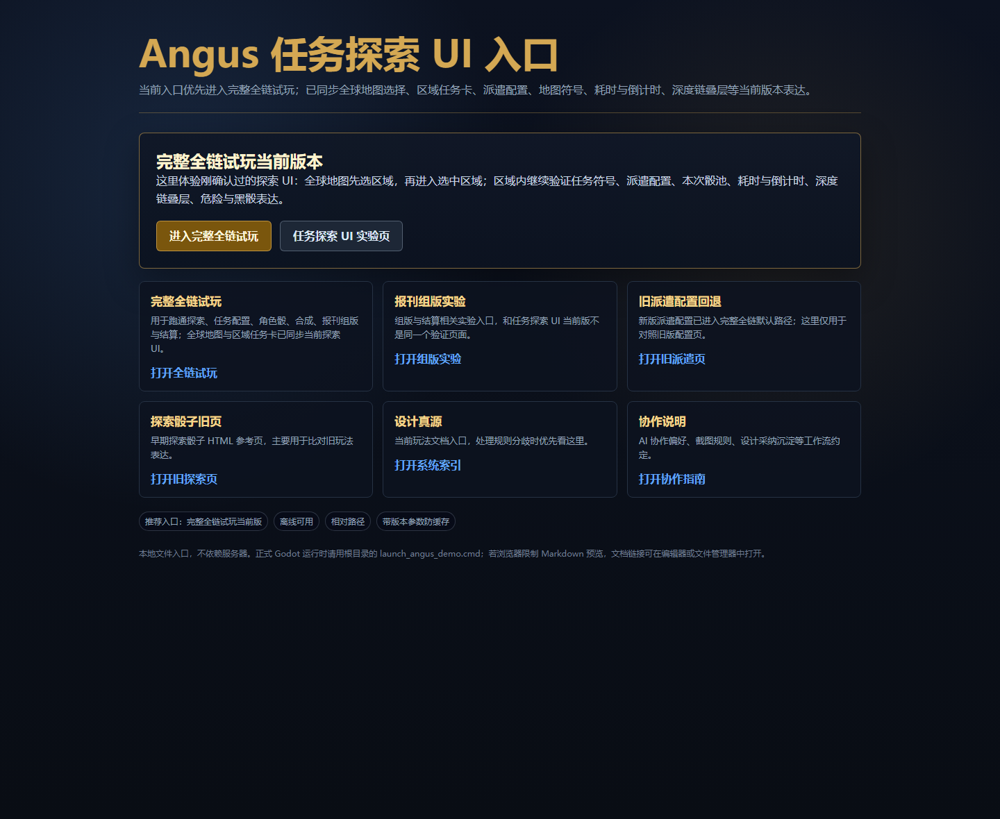
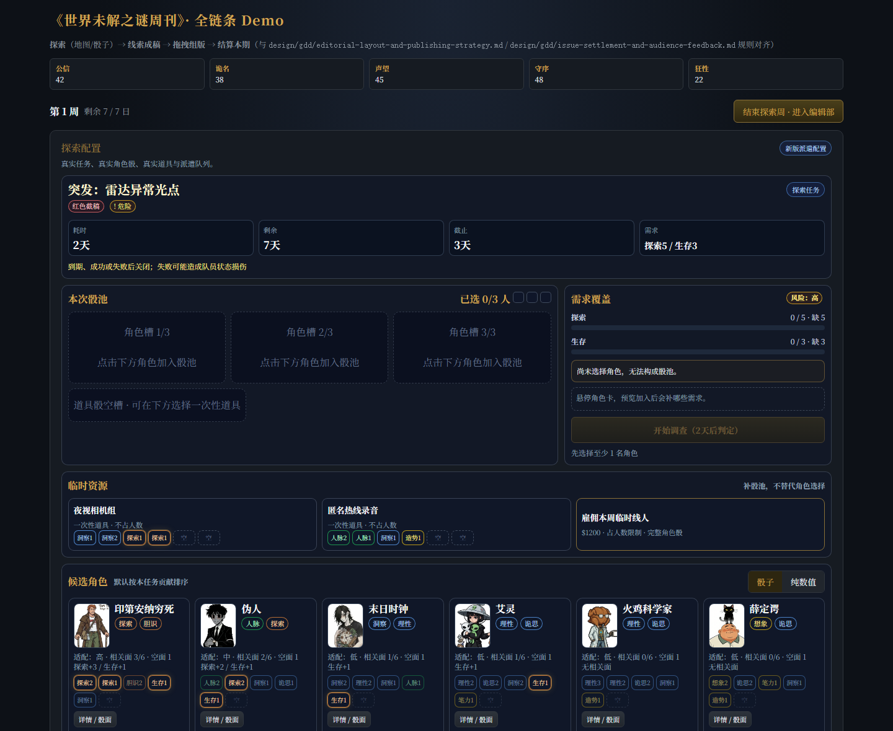
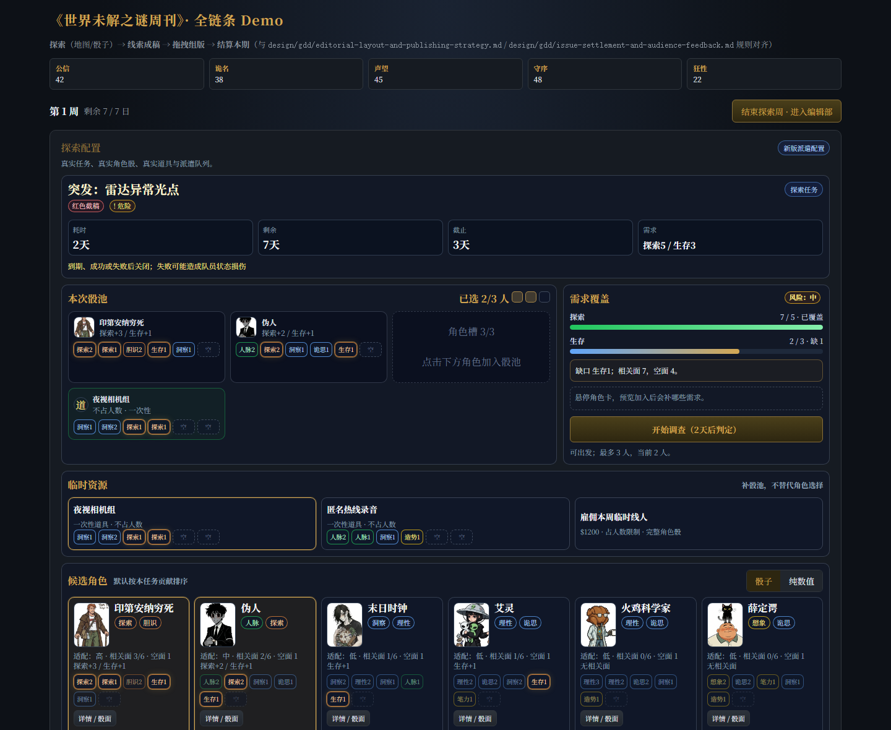

01 · 根入口更新
根入口说明完整全链试玩已包含派遣配置当前版；侧栏入口改为“旧派遣配置回退”，用于对照旧版。

本页汇总 2026-05-13 的派遣配置默认落地。完整全链试玩现在默认使用新版派遣配置；旧版配置页通过 ?dispatchold=1 保留为回退 / 对照入口。
?dispatchold=1 打开旧派遣配置。根入口说明完整全链试玩已包含派遣配置当前版；侧栏入口改为“旧派遣配置回退”，用于对照旧版。

不带派遣实验参数打开完整全链，进入“突发：雷达异常光点”后直接显示新版配置页：任务摘要变为窄条，本次骰池与需求覆盖成为主判断区。

选入 2 名角色与夜视相机组后，需求覆盖、缺口、风险和开始调查按钮实时更新，验证新版配置页的核心交互已经进入默认路径。

使用 ?dispatchold=1 可以回到旧版派遣配置页，便于继续比较改动成本和视觉差异。